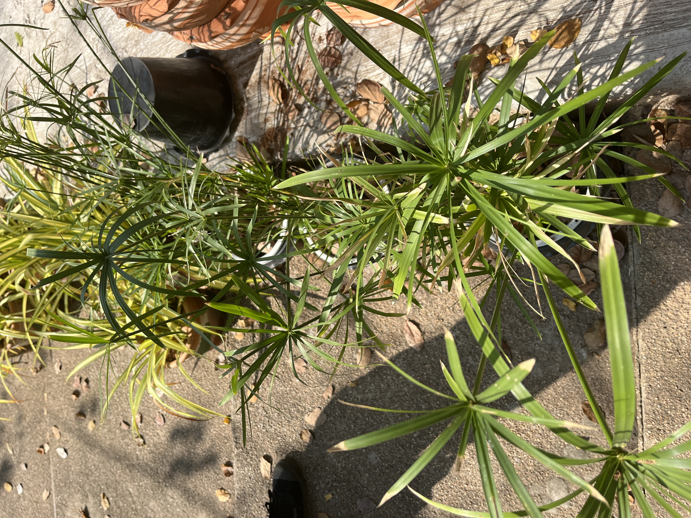
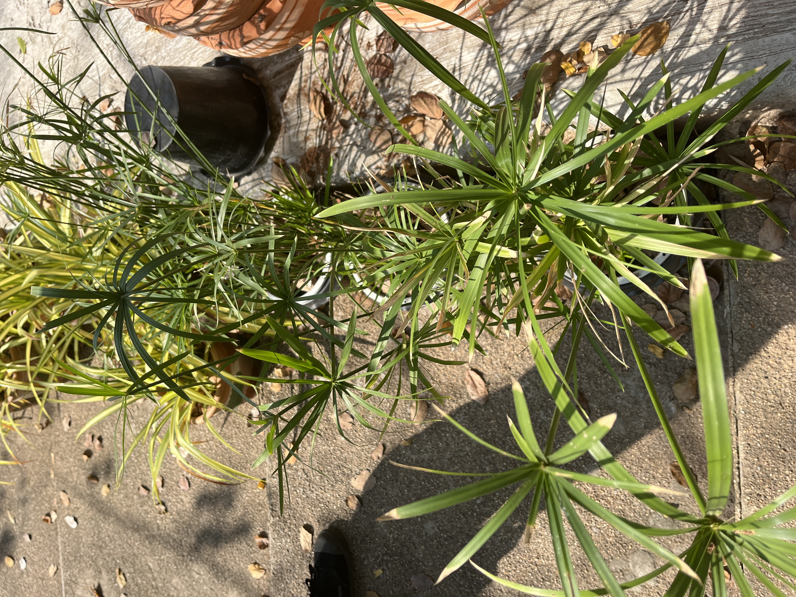

7-40130-001-048/2
ชื่อสมุนไพร:
กกลังกาชื่ออื่นๆ:
กกขนาก, กกต้นกลม, หญ้าลังกา, กกดอกแดง(พระนครศรีอยุธยา) กกรังกา, หญ้าลังกก, หญ้ารังกา(กรุงเทพ)ชื่อสามัญ:
Umbell plant, Flatsedgeชื่อวิทยาศาสตร์: Cyperus alternifolius L.
ชื่อวงศ์: CYPERACEAE
สมุนไพรพื้นบ้านทรงคุณค่า

7-40130-001-048/2
ชื่อสมุนไพร:
กกลังกาชื่ออื่นๆ:
กกขนาก, กกต้นกลม, หญ้าลังกา, กกดอกแดง(พระนครศรีอยุธยา) กกรังกา, หญ้าลังกก, หญ้ารังกา(กรุงเทพ)ชื่อสามัญ:
Umbell plant, Flatsedgeชื่อวิทยาศาสตร์: Cyperus alternifolius L.
ชื่อวงศ์: CYPERACEAE
กกลังกา หรือที่รู้จักกันในชื่อวิทยาศาสตร์ว่า Cyperus alternifolius เป็นพืชล้มลุกที่พบได้ทั่วไปในประเทศไทย มีลักษณะเด่นคือใบเรียวยาวสีเขียวสดชื่น และดอกที่มีลักษณะเฉพาะตัว มักถูกนำมาใช้ในทางสมุนไพรและการประดับตกแต่งสวน
กกลังกามักถูกนำมาใช้ในรูปแบบชาสมุนไพร หรือเป็นส่วนผสมในผลิตภัณฑ์ดูแลสุขภาพ เช่น น้ำมันหอมระเหย หรือยาลูกกลอน
การใช้กกลังกาในปริมาณมากอาจก่อให้เกิดผลข้างเคียง เช่น อาการคลื่นไส้หรือเวียนศีรษะ ควรปรึกษาผู้เชี่ยวชาญก่อนการใช้งาน
ช่วยลดการอักเสบ บรรเทาอาการปวดเมื่อย และช่วยลดความดันโลหิต
เหมาะสำหรับจัดสวนในสไตล์โมเดิร์นหรือทรอปิคอล โดยสามารถปลูกในกระถางหรือริมสระน้ำได้
กกลังกามีความสามารถดูดซับน้ำส่วนเกิน และช่วยปรับปรุงคุณภาพดิน
 
